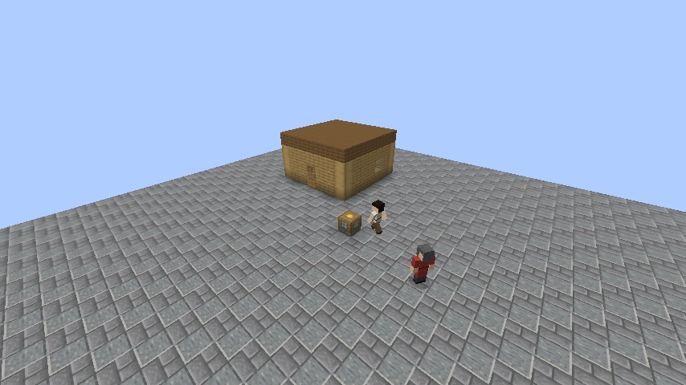
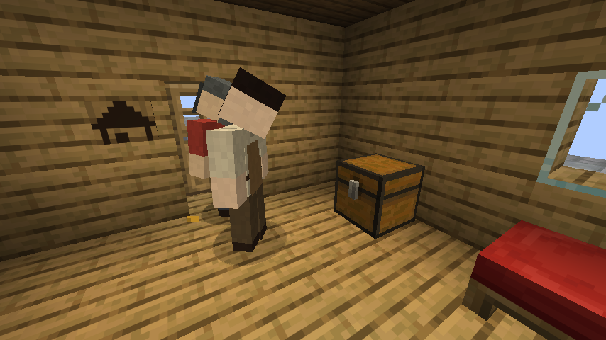
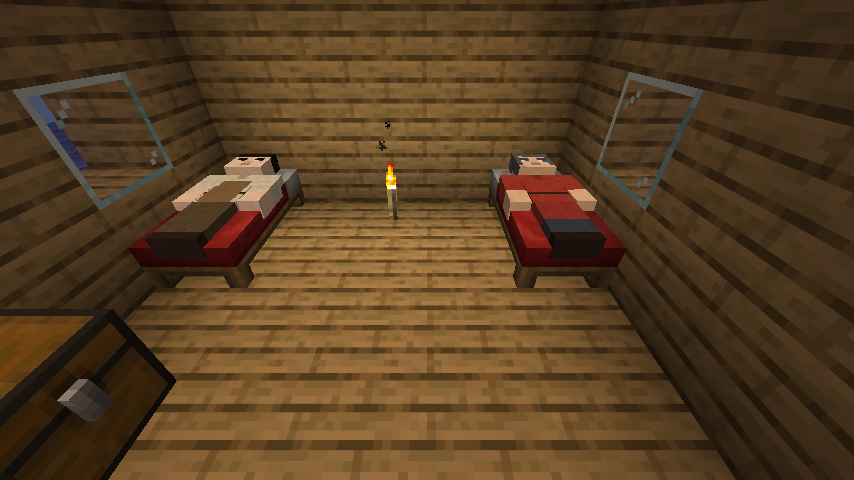

MineCities
Des villes vivantes pour Minecraft 26.2 (Fabric), dans l'esprit vanilla.
Living towns for Minecraft 26.2 (Fabric), vanilla style.
Inspiré de MineColonies, sans plans imposés : vous bâtissez comme vous voulez, le mod reconnaît vos maisons, et des citoyens viennent y vivre. Le village devient ville, puis grande ville, puis mégalopole.



Comment jouer
- Fondez une ville en posant un hôtel de ville : vous en devenez le maire.
- Bâtissez une maison close, avec une porte et des lits, et accrochez-y une plaque de maison.
- Garnissez le grenier de l'hôtel de ville : des citoyens arrivent tant qu'il y a des lits et de quoi manger.
- Prenez soin d'eux : ils mangent, dorment, et peuvent mourir de faim.
Paliers
| Palier | Citoyens | Maisons | Territoire |
|---|---|---|---|
| Village | 0 | 0 | 48 blocs |
| Ville | 10 | 4 | 80 blocs |
| Grande ville | 30 | 12 | 128 blocs |
| Mégalopole | 75 | 30 | 224 blocs |
Inspired by MineColonies, with no imposed blueprints: build as you like, the mod recognises your houses, and citizens come to live in them. The village becomes a town, then a city, then a megalopolis.
How to play
- Found a town by placing a town hall: you become its mayor.
- Build a house, enclosed, with a door and beds, and hang a house plaque inside.
- Stock the granary of the town hall: citizens arrive while there are beds and food.
- Look after them: they eat, sleep, and can starve to death.
Tiers
| Tier | Citizens | Houses | Territory |
|---|---|---|---|
| Village | 0 | 0 | 48 blocks |
| Town | 10 | 4 | 80 blocks |
| City | 30 | 12 | 128 blocks |
| Megalopolis | 75 | 30 | 224 blocks |